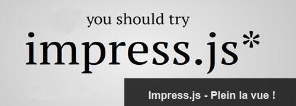
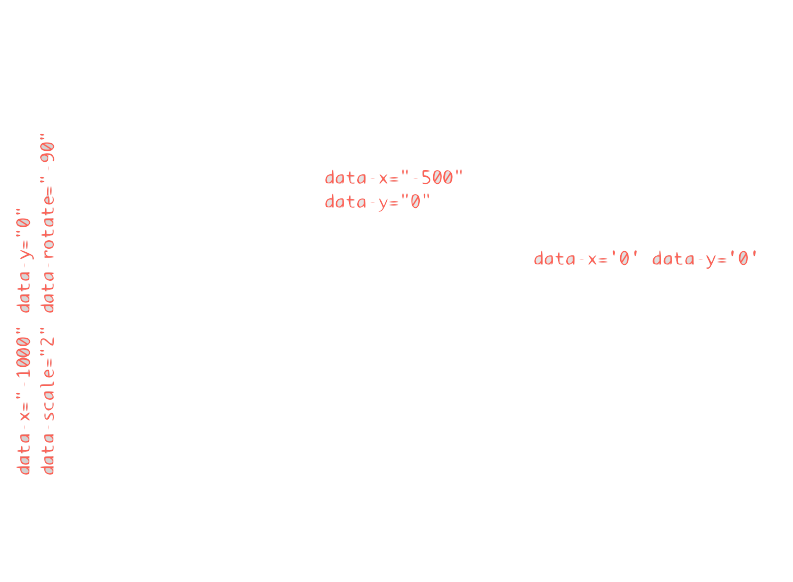
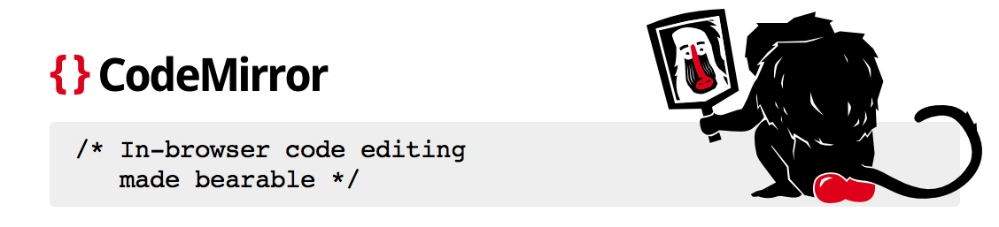
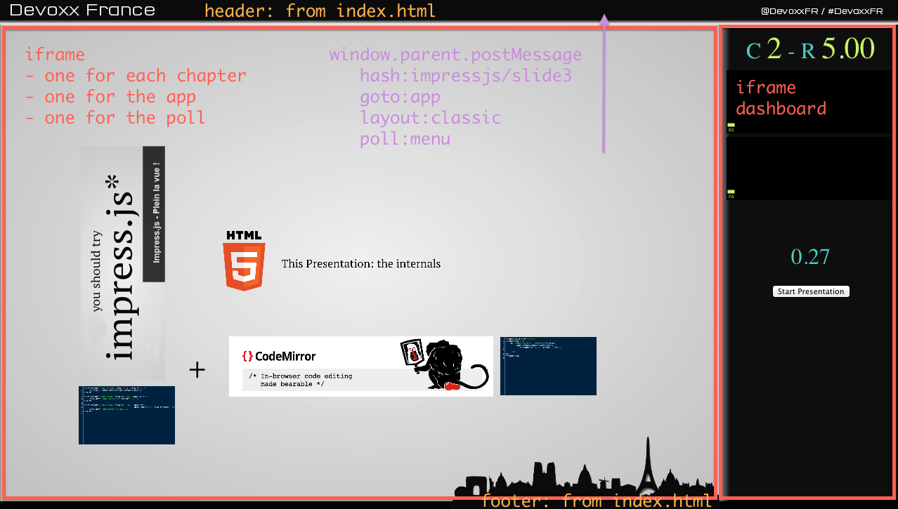

Your browser doesn't support the features required by impress.js, so you are presented with a simplified version of this presentation.
For the best experience please use the latest Chrome, Safari or Firefox browser. Upcoming version 10 of Internet Explorer should also handle it.
This Presentation: the internals




+